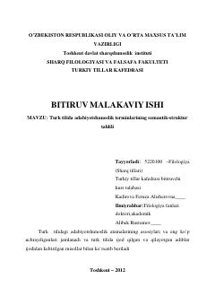

TTTurk tilidagi adabiyotshunoslik terminlarining semantik va strukturaviy tahliliga bag'ishlangan ilmiy ish.
Ushbu bitiruv malakaviy ishi turk tilidagi adabiyotshunoslikka oid atamalarning semantik va strukturaviy xususiyatlarini tahlil qiladi. Ishda she'riy san'atlar, vaznlar hamda badiiy turlarga oid terminlar misollar yordamida ilmiy jihatdan yoritib berilgan.